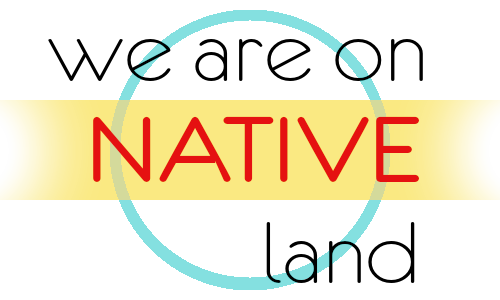
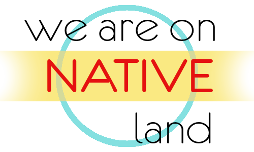

Is Laguna-Acoma in a food desert?
Authored by: Mason Bishop
This map was made on Q.GIS3.34.3 with data from the U.S. Census Bureau and OpenStreetMap. Please see my GitHub repository for the full instruction.
- See my projects on GitHub: New Maps Plus
 
